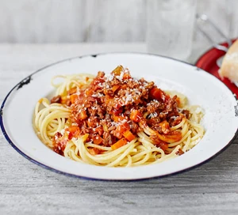

Classic Spaghetti Bolognese Recipe

Ingredients:
- 400g spaghetti
- 1 tablespoon olive oil
- 1 onion, finely chopped
- 2 cloves garlic, minced
- 500g ground beef
- 400g canned crushed tomatoes
- 2 tablespoons tomato paste
- 1 teaspoon dried oregano
- 1 teaspoon dried basil
- Salt and pepper to taste
- Grated Parmesan cheese for garnish
Instructions:
- Bring a large pot of salted water to a boil. Cook the spaghetti according to package instructions until al dente. Drain and set aside.
- In a large skillet, heat the olive oil over medium heat. Add the chopped onion and cook until translucent.
- Add the minced garlic and cook for another minute.
- Add the ground beef to the skillet. Cook, breaking it up with a spoon, until browned and cooked through.
- Stir in the crushed tomatoes, tomato paste, oregano, basil, salt, and pepper. Simmer the sauce for 10-15 minutes, stirring occasionally.
- Taste the sauce and adjust the seasonings if necessary.
- Serve the Bolognese sauce over the cooked spaghetti.
- Garnish with grated Parmesan cheese.
- Enjoy your delicious Classic Spaghetti Bolognese!